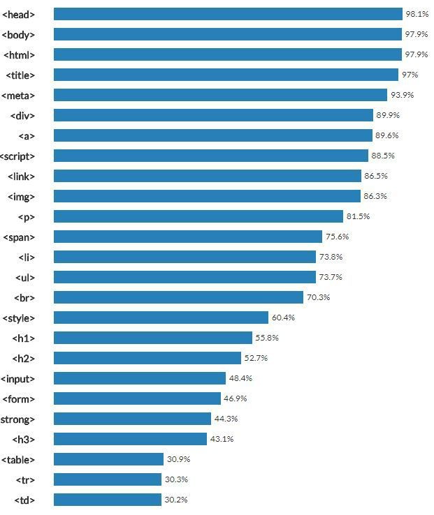

1. HTML의 정의
하이퍼텍스트 마크업 언어(HyperText Markup Language, HTML)는 웹 페이지를 위한 지배적인 마크업 언어다.
HTML은 제목, 단락, 목록 등과 같은 본문을 위한 구조적 의미를 나타내는 것뿐만 아니라 링크, 인용과 그 밖의 항목으로 구조적 문서를 만들 수 있는 방법을 제공한다.
그리고 이미지와 객체를 내장하고 대화형 양식을 생성하는 데 사용될 수 있다. HTML은 웹 페이지 콘텐츠 안의 꺾쇠 괄호에 둘러싸인 "태그"로 되어있는 HTML 요소 형태로 작성한다.
HTML은 웹 브라우저와 같은 HTML 처리 장치의 행동에 영향을 주는 자바스크립트와 본문과 그 밖의 항목의 외관과 배치를 정의하는 CSS 같은 스크립트를 포함하거나 불러올 수 있다.
HTML과 CSS 표준의 공동 책임자인 W3C는 명확하고 표상적인 마크업을 위하여 CSS의 사용을 권장한다.
2. HTML 도구 : 태그와 문법
요소와 태그는 널리 혼동되는 용어들이다. HTML 문서들은 태그를 포함하지만 요소를 포함하지는 않는다. 요소는 구문 분석 단계 "이후"에 이 태그들로부터 생성된다.
요소의 위치는 시작 태그로부터 신장되며 일부 차일드 콘텐츠를 포함할 수 있으며 종료 태그로 종료된다.HTML 문서 내의 다수의 요소에 해당되지만 모든 요소에 해당되는 것은 아니다.
HTML이 SGML에 기반을 두므로 구문 분석 또한 DTD, 특히 HTML 4.01의 것과 같은 HTML DTD의 사용에 의존한다. DTD는 어느 요소 유형이 가능한지 규정하며
(예: HTML을 이루는 요소 유형의 집합을 정의) 문서에서 나타나는 유효한 결합도 규정한다.
3. HTML Tag Best Frequency
<strong>, <u>, <br>, <p>, <li>, <ul>, <ol>, <a>, <!doctype html>, <html>, <head>, <title>, <meta>, <body>, <iframe>

<st>, <st>